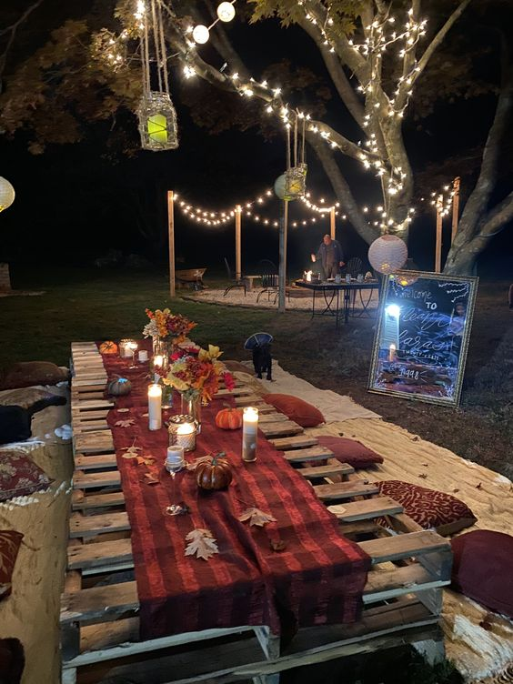

HOLD A "DUMB SUPPER"
Dating back to the Middle Ages, the tradition of the “dumb supper” involves a meal eaten in total silence. Decorate a table with photos and mementos of the people you wish to remember and celebrate.